Bienvenido a Andreu Manteniment Industrial.
Somos una empresa dedicada a las instalaciones de media y baja tensión, proyectos de automatización, mantenimiento industrial y otras instalaciones.
Evolución
Desde su fundación hemos experimentado un continuo crecimiento basado en el compromiso, la calidad y la formación continua de nuestros técnicos.
Esto nos ha permitido consolidarnos y poder realizar los proyectos más complejos y ambiciosos, tanto de soluciones integrales como de mantenimiento.
Para poder dar un completo servicio contamos con profesionales de diferentes especialidades del sector industrial; electricidad, automatización neumática, informática, etc. que nos permite garantizar la experiencia y la profesionalidad de nuestros técnicos en todos los servicios ofrecidos.
También disponemos de los últimos sistemas en el campo industrial, como la nueva serie siemens S7-1200 para automatizaciones o los estudios termográficos para la seguridad y de la detección de averías.
Nos encontramos en el polígono industrial de Valls, población de la provincia de Tarragona y ofrecemos nuestros servicios tanto localmente como con desplazamientos dentro y fuera del territorio español.
Le invitamos a que de un paseo por nuestra web y conozca más a fondo nuestra gama de servicios.
Para más información puede descargar nuestro tríptico informativo (interior, exterior)
Home
Nuestras instalaciones están ubicadas en el Polígono Industrial de Valls carretera Pla de Santa Maria.
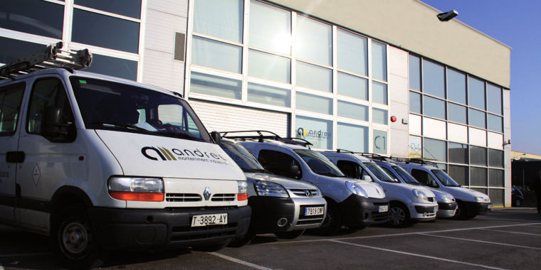
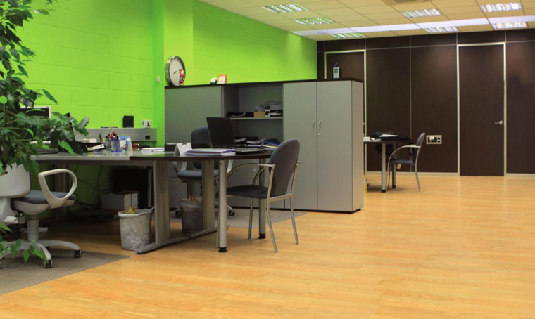 Disponemos de una nave industrial de un total de 500m2 . En la planta superior se encuentran las oficinas y la sala de reuniones.
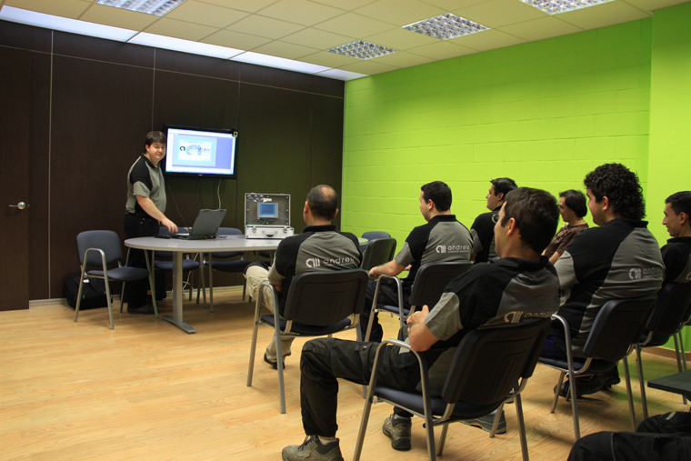 En la planta inferior está el almacén y el taller, donde preparamos el material y elaboramos los cuadros de control y potencia que instalaremos
posteriormente en las instalaciones.
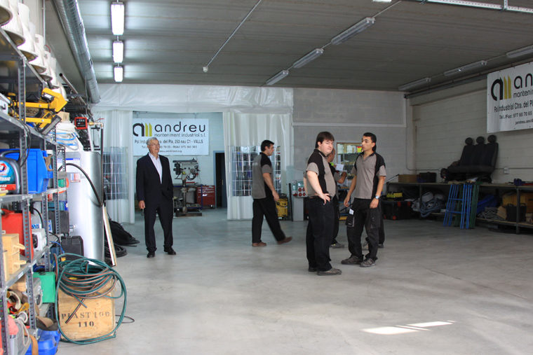 Home
Nuestro departamento técnico realiza todo tipo de proyectos eléctricos de media y baja tensión. Realizamos todo tipo de instalaciones neumáticas de posicionamiento, de proceso, e instalaciones de fluidos líquidos para plantas químicas, tratamiento de aguas y alimentaria.
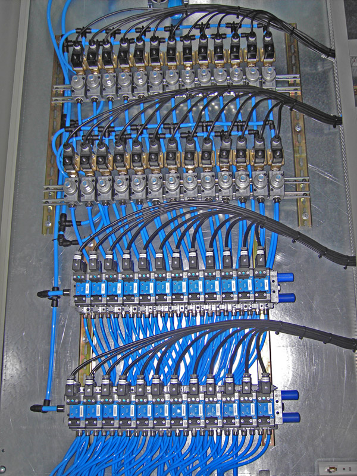
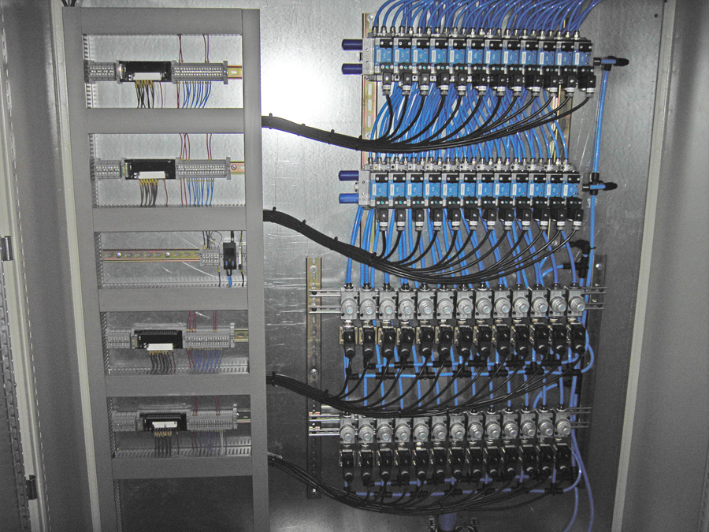
Entre los productos y servicios que ofrecemos a nuestros clientes destacan: Estudiamos las necesidades de nuestro cliente y diseñamos todo tipo de cuadros eléctricos de potencia y control, junto con un completo informe entregado en soporte informático para la oficina
técnica y en papel para armarios de campo.
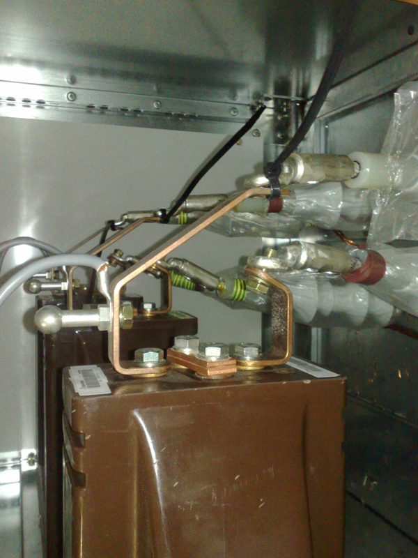
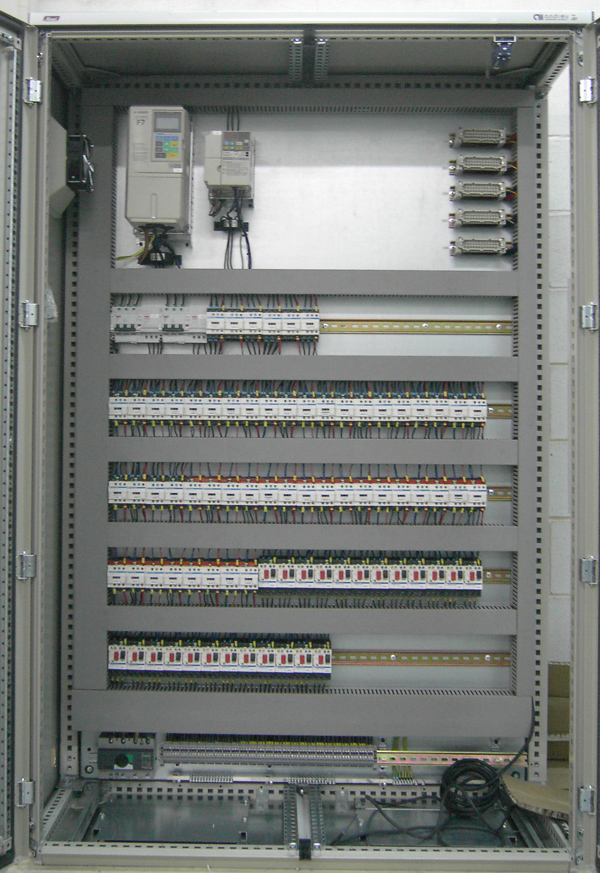
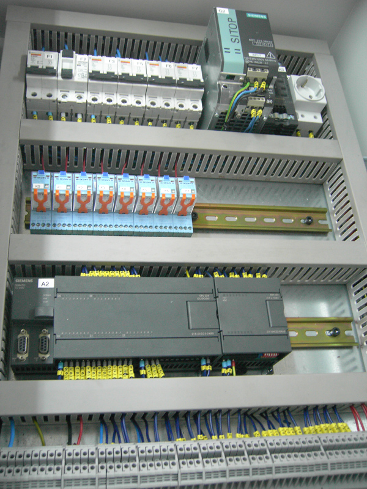 Andreu Manteniment Industrial cuenta con un departamento propio dedicado a la automatización y control de procesos. Nuestros técnicos cualificados ofrecen la mejor solución tecnológica.
Para ello estamos en permanente contacto con los
principales marcas del mercado, ofreciendo a nuestros clientes la mejor solución tecnológica. Home
Andreu Manteniment Industrial realiza auditorias energéticas para poder optimizar los recursos y mejorar el rendimiento energético en sus instalaciones. Además de mejorar la calidad de su instalación, podemos ayudarle a alargar la vida útil de sus equipos y reducir sus gastos en energía eléctrica. Inicialmente hacemos un estudio personalizado del estado de la instalación mediante analizadores de red. Una vez analizado el consumo de los equipos realizamos un informe detallando las posibles mejoras y
haciendo una estimación del ahorro económico que supondria. Medidas como el uso de arrancadores progresivos o variadores de frecuencia permite ajustar el consumo en función de la carga del equipo, adaptándose a las circunstancias del proceso de producción. De manera que se consigue una rápida amortización de los equipos de ahorro energético.
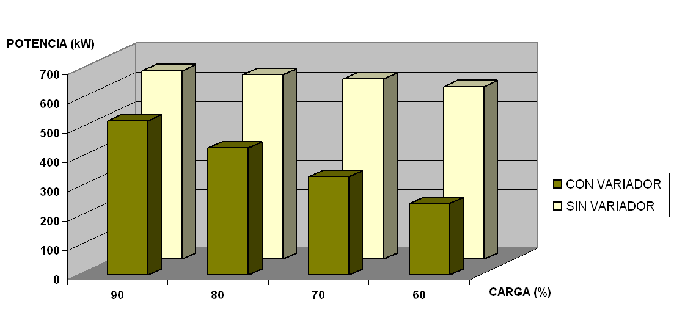
Home
Desde Andreu Manteniment Industrial buscamos ofrecer un servicio de mantenimiento integral, por eso no solo reparamos y solucionamos averías, sino que proporcionamos un servicio predictivo y preventivo
mediante cámara termográfica de última generación. Con cada estudio termográfico elaboramos un informe completo del estado de totos los puntos de la instalación, señalando los puntos más críticos de la instalación. Termografías para el estudio del aislamiento térmico de nave frigorífica.
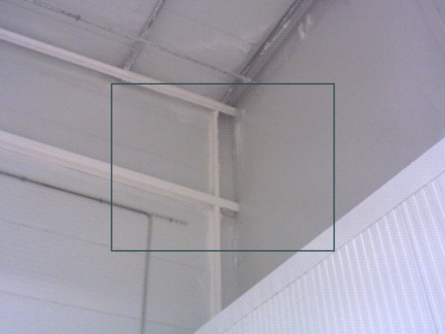
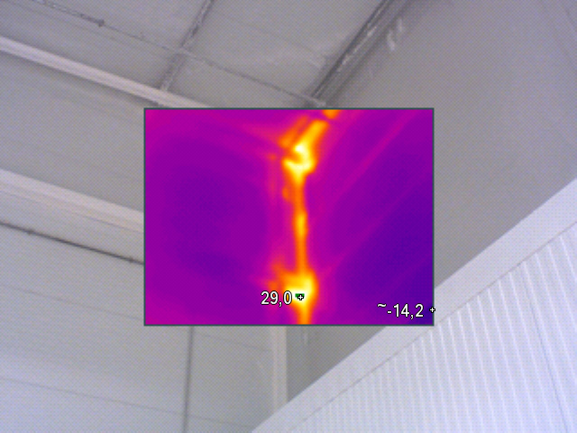
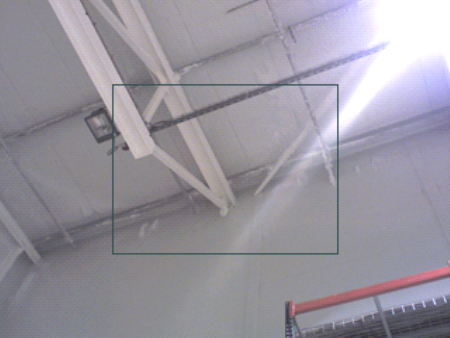
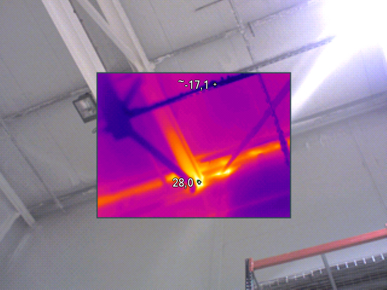
Termografías para el estudio de fallos en el sistema eléctrico.
Home
Le ofrecemos nuestros servicios de mantenimiento tanto en actuaciones puntuales, como incorporando un técnico de Andreu Manteniment Industrial a su plantilla habitual, adaptandonos al horario de su empresa. Cubrimos todos los aspectos del mantenimiento industrial. Disponemos de los equipos más novedosos como los sistemas de termografia o analizadores de redes eléctricas. Home
Nos encontramos en el Polígono Industrial de Valls Ver localización en google maps © Ver fotografia en google street view © Carretera del Pla de Santa Maria nº 253 nave C1
Proyectos e instalaciones eléctricas de media y baja tensión
Instalaciones neumáticas y de líquidos de proceso
Sistemas de telecomunicación y seguridad electrónica
Montaje de cuadros de distribución y control
Automatizaciones y procesos de control a medida
Los estudios termográficos son una importante herramienta para el mantenimiento preventivo y predictivo de instalaciones de todo tipo como: motores,
transformadores, cuadros eléctricos, hornos, cámaras frigoríficas, etc.
El estudio de un termograma permite la localización de puntos calientes que delatan la presencia de defectos de funcionamiento en los equipos antes de que se produzca la avería. De este modo se puede llevar
a cabo un mantenimiento preventivo de las instalaciones.Aplicaciones
De esta manera nuestros clientes pueden ahorrarse costes de producción minimizando el número de paradas de producción para
mantenimiento de los equipos. El mantenimiento preventivo puede realizarse con más frecuencia dado que no interviene en el proceso de fabricación con la consecuente mejora de funcionamiento.
La precisión de estos sistemas termográficos nos permite determinar con rapidez y exactitud el foco del problema.
El funcionamiento de equipos como por ejemplo cojinetes, motores, bombas, etc, con un aumento de temperatura sustancial pueden indicar el mal funcionamiento del equipo y de esta manera adelantarnos a futuras averías.
Estas mejoras del mantenimiento preventivo se ven reflejadas de manera positiva en los costes de producción y mantenimiento,
optimizando los recursos de los que disponemos y el tiempo empleado en mantenimiento.
La vida útil de los equipos está influida directamente por el funcionamiento y el mantenimiento realizado, de manera que un mantenimiento eficiente nos permite alargar
la vida útil de nuestros equipos.
Se disminuye el consumo en los equipos de refrigeración/calefacción actuando sobre las causas que originan las pérdidas de frío o calor.
De esta manera
se consigue tanto un ahorro energético como un menor impacto medioambiental
Dada la eficiencia de los estudios termográficos, la gran mayoría de las compañías aseguradoras valoran positivamente que su empresa tenga un programa de
mantenimiento con análisis termográfico.Documentación

Ejemplos
 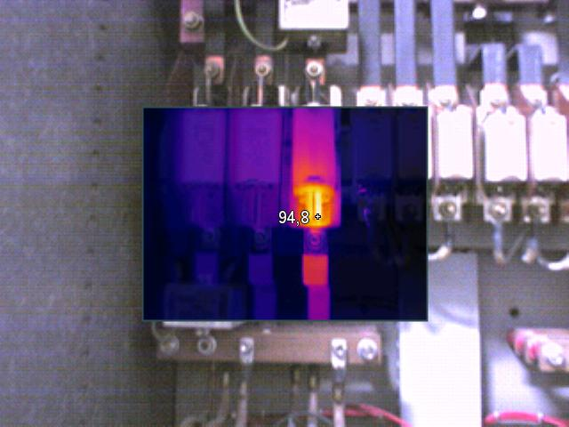
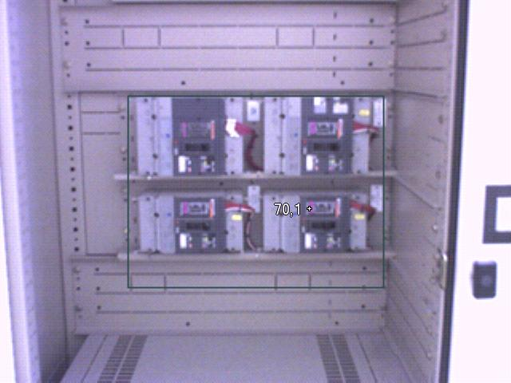
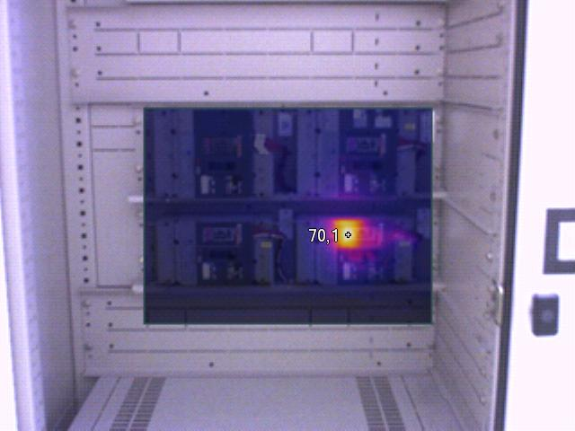
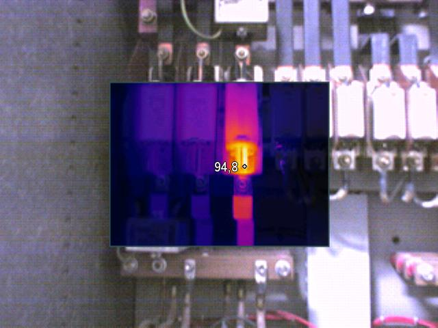
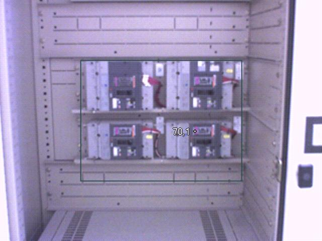
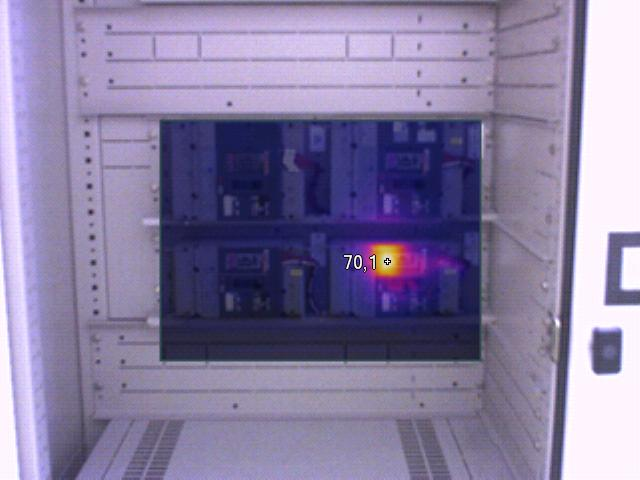
Reparaciones de averias eléctricas, electromecánicas y electrónicas.
Contamos con herramientas de gestión y diagnóstico de mantenimiento preventivo en la medida de sus requerimientos.
Implantación de sistemas para detectar posibles disfunciones de las máquinas antes que se produzcan.
Mapa
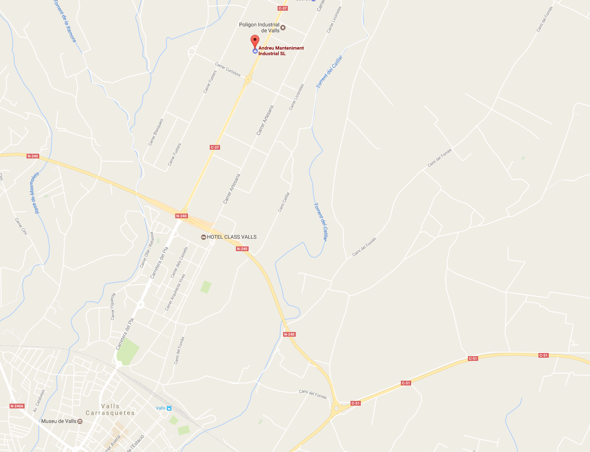
Código postal: 43800
Población: Valls (Tarragona).
|